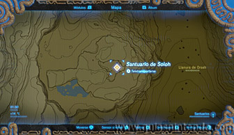
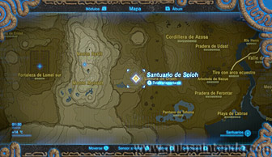
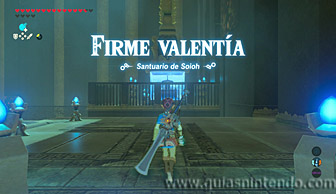
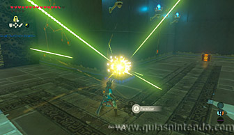
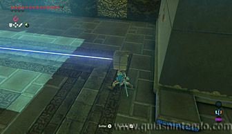
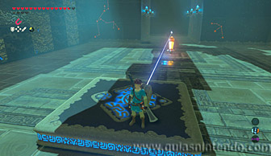
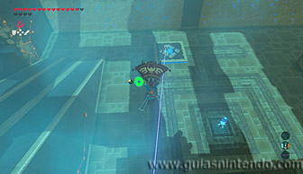
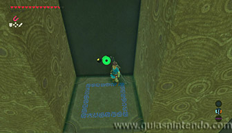
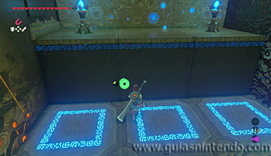
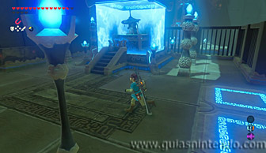

Puedes acceder a este santuario desde que llegas a la torre del lago. Está situado en una meseta al suroeste de la torre.

La única manera de completar este santuario es coger el bloque que dispara rayos láser. Antes de hacerlo, paralízalo y así podrás pasar para abrir el cofre (contiene un Topacio).

A continuación, coge el bloque desde un lateral para que no te dañe y llévalo a la plataforma que se mueve horizontalmente a ras del suelo. Debes dejarlo encima de ella, de tal forma que apunte al interruptor con forma de cristal que hay enfrente. Así, cada cierto tiempo, se activará y desactivará el mecanismo del santuario al golpear el interruptor.

Antes de pensar en llegar al altar puedes abrir un segundo cofre. Para ello sube a la entrada del santuario y desde allí arriba salta y planea a las columnas que hay en la pared del fondo, de tal modo que te puedas posar en unas columnas cuando estén bajas. Luego espera a poder avanzar y llegarás a un cofre que contiene un núcleo ancestral.

Ahora sí, ya puedes ir subiendo por los bloques de la esquina cuando se vayan activando (solo debes esperar en cada escalón a que te eleven) hasta el altar del santuario y obtener un símbolo de valía.
